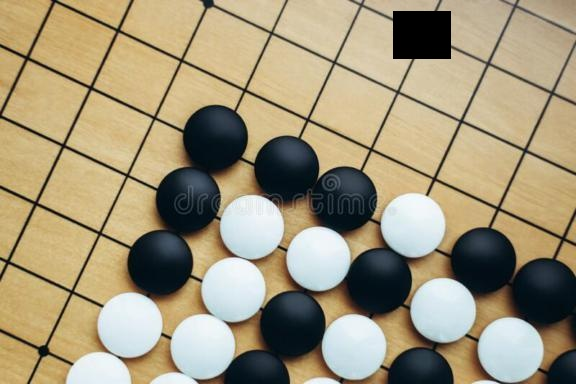
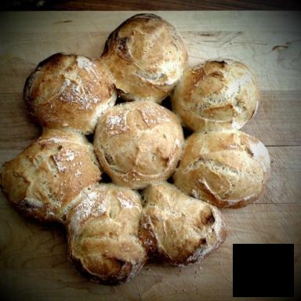
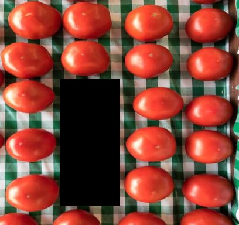
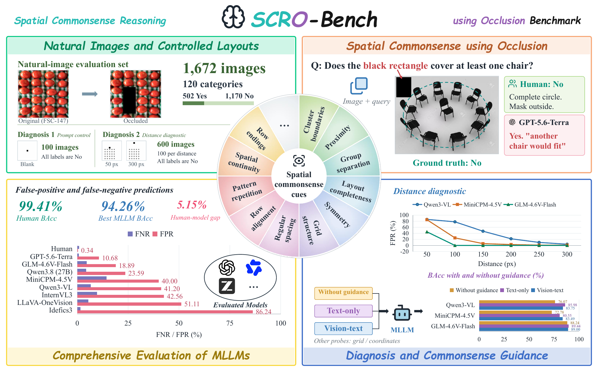
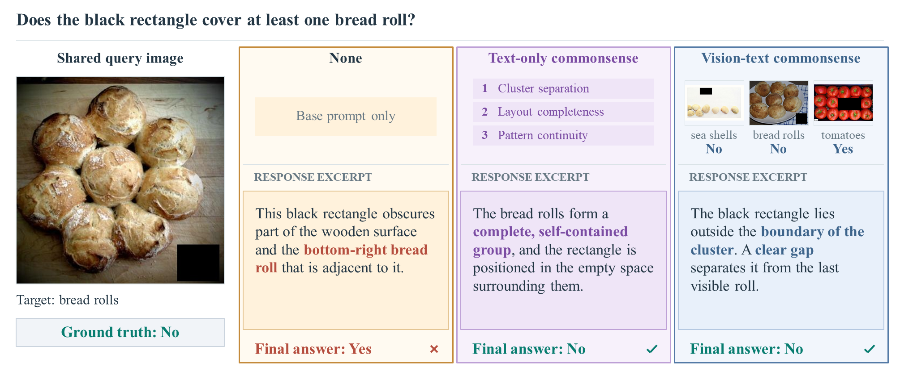

SPATIAL SEPARATION
Distance to the cluster
False positive rates fell for all three models as the mask moved farther from the fixed array of circles.
| Model | 50 px | 300 px |
|---|---|---|
| Qwen3-VL | 86.0% | 4.0% |
| MiniCPM-V-4.5 | 85.0% | 1.0% |
| GLM-4.6V-Flash | 45.0% | 0.0% |
A COMMONSENSE REASONING BENCHMARK
Spatial Commonsense Reasoning using Occlusion
Can a model use the visible layout of a scene to tell whether a mask hides a target object?



Spatial commonsense is an innate human ability that enables people to understand scene layouts and infer unseen content. Despite rapid advances in multimodal large language models (MLLMs), whether they possess human-like spatial commonsense remains an open question. To this end, we introduce SCRO-Bench (Spatial Commonsense Reasoning using Occlusion), a benchmark that uses occlusion to evaluate whether MLLMs possess spatial commonsense and the ability to leverage it in reasoning. The benchmark introduces occlusion into images of object clusters drawn from counting datasets, requiring models to apply spatial commonsense cues (e.g., cluster boundaries and layout completeness) to determine whether a specified occluded region covers at least one instance of the queried category. SCRO-Bench comprises 1,672 natural images, covering 120 object categories, along with two controlled synthetic test sets. We evaluate eight MLLMs and establish a human baseline, finding that the evaluated models perform substantially worse than humans and exhibit higher false positive rates than false negative rates overall. Further diagnostic and commonsense guidance experiments suggest that models possess some spatial commonsense but have yet to attain human-like competence, while explicit commonsense guidance can improve their performance. SCRO-Bench provides a foundation for evaluating and improving the capabilities of MLLMs that utilize spatial commonsense in reasoning. SCRO-bench will be open-sourced.
01 / THE BENCHMARK
SCRO-Bench asks a yes-or-no question about a specific masked region: does it cover at least one instance of the target category? Visible instances confirm the category is present in the scene. Their arrangement offers evidence about whether it extends into the mask.
The natural set includes 502 target-containing and 1,170 background-only regions. Two controlled synthetic sets isolate blank-background prompting and the distance from the mask to an object cluster.

02 / INTERACTIVE EXAMPLES
Use the same visible evidence as the models. Choose a scene, make your prediction, then reveal the ground truth.
02 / LAYOUT COMPLETENESS
Does the mask cover at least one bread roll?
03 / MAIN RESULTS
Humans achieve near-ceiling performance. Across the evaluated models, false positives are more common than false negatives.
| Rank | Model | FPR ↓ | FNR ↓ | BAcc ↑ | Error ↓ |
|---|---|---|---|---|---|
| — | Human baseline | 0.34 | 0.84 | 99.41 | 0.49 |
| 1 | GPT-5.6-Terra | 10.68 | 0.80 | 94.26 | 7.72 |
| 2 | GLM-4.6V-Flash (9B) | 18.89 | 4.58 | 88.26 | 14.59 |
| 3 | Qwen3.8 (27B) | 23.59 | 4.38 | 86.01 | 17.82 |
| 4 | MiniCPM-V-4.5 (8B) | 40.00 | 14.34 | 72.83 | 32.30 |
| 5 | Qwen3-VL (8B) | 41.20 | 6.57 | 76.11 | 30.80 |
| 6 | InternVL3 (8B) | 42.56 | 9.76 | 73.84 | 32.72 |
| 7 | LLaVA-OneVision (7B) | 51.11 | 5.38 | 71.76 | 37.38 |
| 8 | Idefics3 (8B) | 86.24 | 1.59 | 56.08 | 60.83 |
Human scores are reported as a reference and excluded from model ranks.
04 / ADDITIONAL ANALYSIS
Controlled tests probe how occlusion judgments respond to spatial separation, explicit guidance, and the presentation of the mask.
SPATIAL SEPARATION
False positive rates fell for all three models as the mask moved farther from the fixed array of circles.
| Model | 50 px | 300 px |
|---|---|---|
| Qwen3-VL | 86.0% | 4.0% |
| MiniCPM-V-4.5 | 85.0% | 1.0% |
| GLM-4.6V-Flash | 45.0% | 0.0% |
SPATIAL GUIDANCE
Text principles and image–text demonstrations improved balanced accuracy in the tested settings. The cues covered separation, completeness, and continuity.
See the guidance exampleMASK APPEARANCE
All four nonblack conditions reduced false positives for each tested model. Changes in balanced accuracy depended on the model and color.
False positive rate (%) on background-only samples, with 100 images at each distance.
| Model | 50 px | 100 px | 150 px | 200 px | 250 px | 300 px |
|---|---|---|---|---|---|---|
| Qwen3-VL (8B) | 86.0 | 78.0 | 47.0 | 22.0 | 10.0 | 4.0 |
| MiniCPM-V-4.5 (8B) | 85.0 | 25.0 | 6.0 | 3.0 | 1.0 | 1.0 |
| GLM-4.6V-Flash (9B) | 45.0 | 0.0 | 0.0 | 0.0 | 0.0 | 0.0 |

Balanced accuracy (%) on the same natural images. Mask location, geometry, and size were held fixed, and each prompt named its matching mask color.
| Mask color | Qwen3-VL (8B) | MiniCPM-V-4.5 (8B) | GLM-4.6V-Flash (9B) |
|---|---|---|---|
| Black | 76.11 | 72.83 | 88.26 |
| White | 79.79 | 76.22 | 86.13 |
| Red | 87.31 | 76.79 | 92.01 |
| Green | 86.85 | 78.60 | 91.80 |
| Blue | 85.94 | 79.81 | 91.14 |